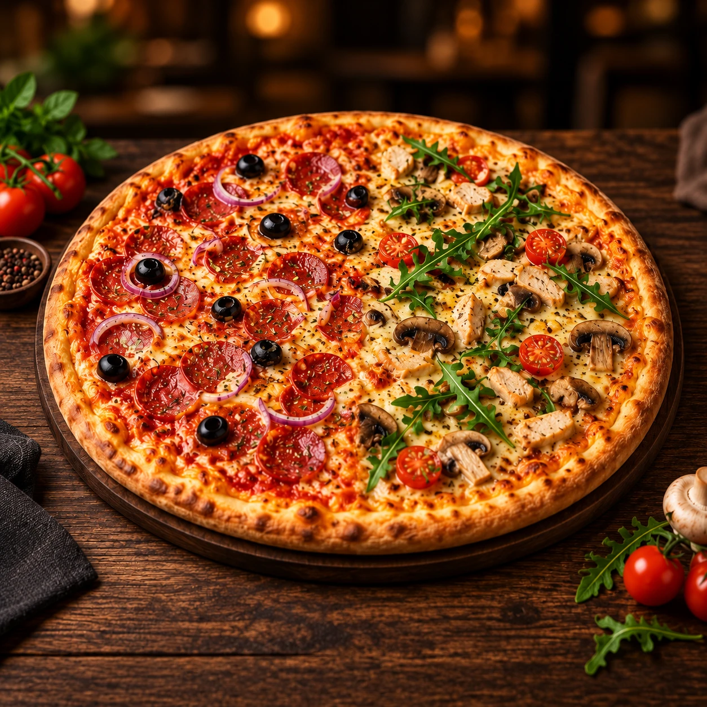
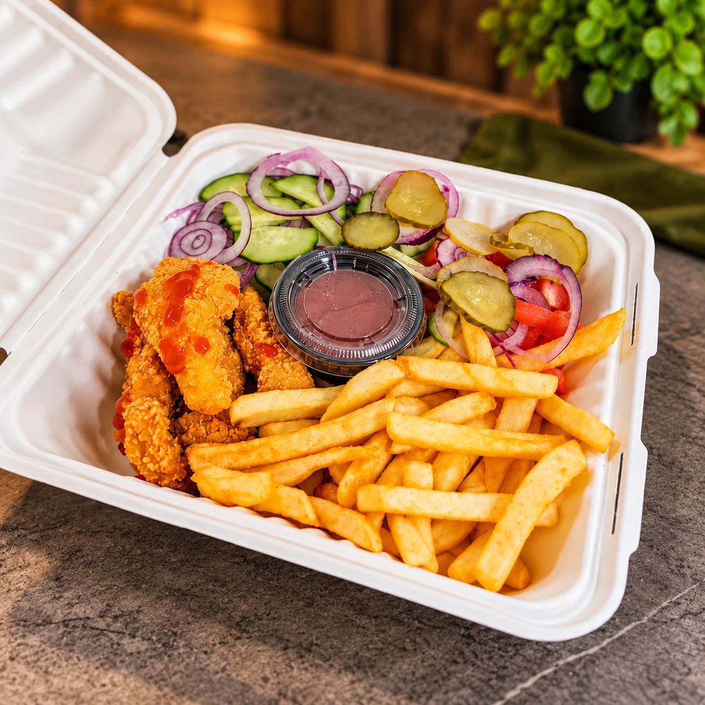

Čia telpa didelis apetitas
Užsuk alkanas.
Išeik sotus.
Picos dalintis, užkandžiai pasimėgauti ir briediškai gera nuotaika. Susitinkam Kauno Eiguliuose.
✳S. Žukausko g. 15 · Kaunas

Mažiau alkio.✳Daugiau šypsenų.✳Sotus Briedis.

Briedis sucharakteriu
Užsuk su apetitu
Skaniau,
kai kartu.
Pica vakarui kartu, greitas užkandis ar sotus kąsnis į namus. Išsirink savo mėgstamą skonį, o maistu pasirūpins „Sotus Briedis“.
Patiekalų pasirinkimą rasi paskelbtame meniu, o užsakymą gali pateikti telefonu.
Peržiūrėti meniu ↗Iš Sotaus Briedžio